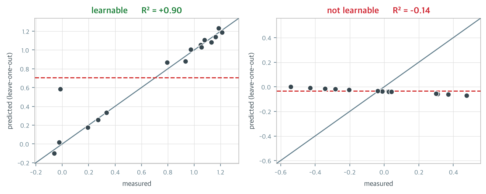
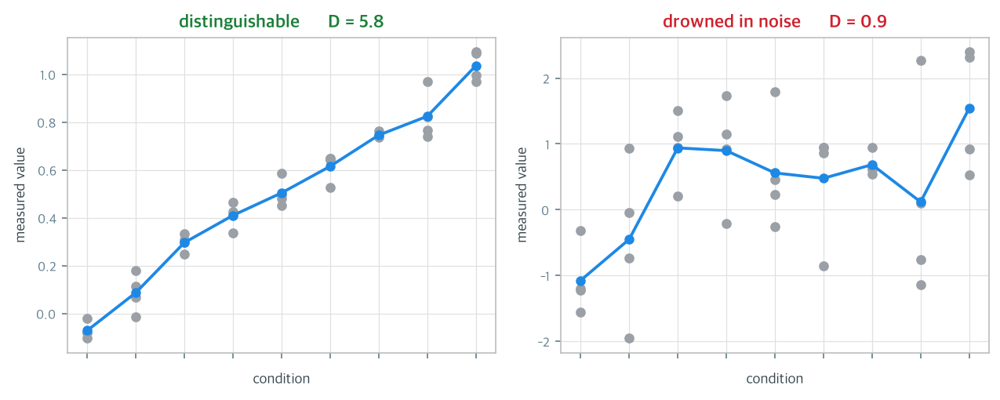
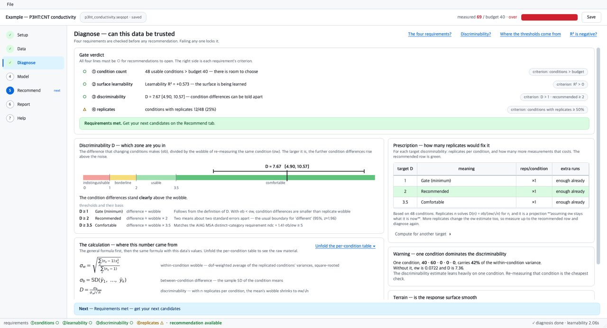
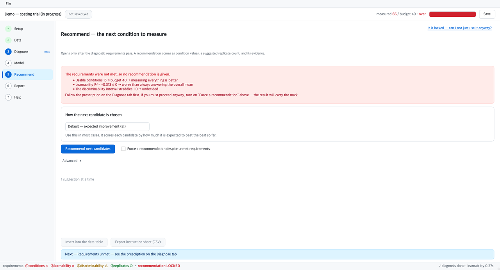
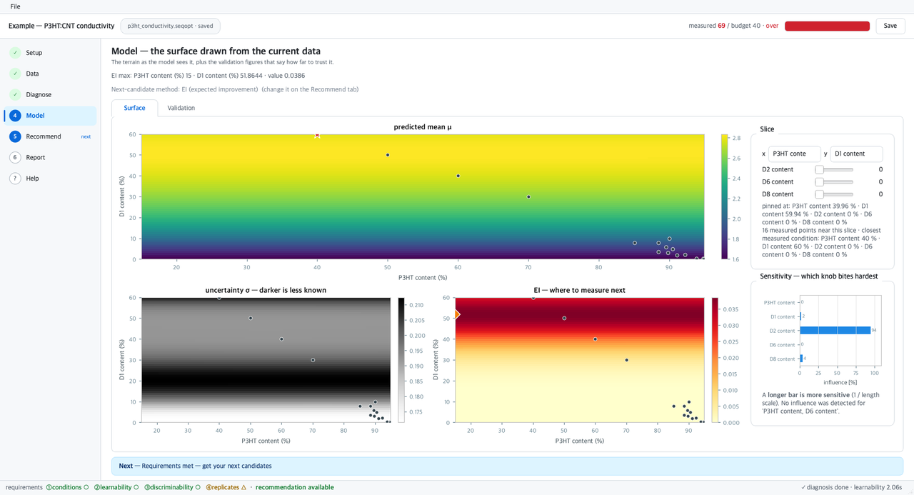

실험 한 번에 하루가 들고 시료가 소모된다면 조건을 전부 훑어 볼 수는 없습니다. 순차 최적화는 몇 점만 재고 그 결과로 지형을 짐작한 뒤 다음에 잴 한 점을 고릅니다. 아래 판이 그 실험실입니다. 조건(가로축)을 고르면 결과값(세로축)이 나오지만, 그 관계는 재 보기 전에는 보이지 않습니다.
아무 데나 세 번 눌러 보세요. 세 점이 모이면 모델이 지형을 그리기 시작합니다.
파란 선은 모델이 짐작한 응답면입니다. 그 둘레의 옅은 띠는 “이 근처는 잘 모르겠다”는 불확실성입니다. 재 본 점 근처에서는 띠가 좁고, 안 가 본 곳에서는 넓어집니다.
아래쪽 주황 곡선이 핵심입니다. 각 지점을 “재면 얼마나 이득일까”를 점수로 매긴 것으로, 기대개선량(EI)이라고 합니다. 좋아 보이는 정도와 모르는 정도를 함께 저울질하기 때문에, 이미 재 본 곳은 점수가 0에 가깝고 좋을 것 같으면서도 안 가 본 곳에서 가장 높습니다. 순차 최적화는 그 꼭대기를 다음 측정 지점으로 고릅니다.
1부의 곡선은 매끄러웠습니다. 실제 실험 데이터는 그렇지 않을 때가 많습니다. 그런데 보통의 최적화 도구는 그런 데이터에도 매끄러운 응답면과 그럴듯한 다음 후보를 내놓습니다. 그걸 믿고 실험하면 시간과 시료를 버립니다.
조건을 하나씩 빼고 나머지로 학습해 그 조건을 맞혀 보게 합니다. 잘 맞히면 점들이 대각선에 붙습니다. 못 맞히면 빨간 가로선(전체 평균) 쪽으로 몰립니다. “뭘 물어도 평균이라고 답하는” 상태이고, 이때 R²는 음수가 됩니다.

같은 조건을 다시 재도 값은 조금씩 흔들립니다. 조건을 바꿔서 생긴 차이가 그 흔들림보다 작다면, 어느 조건이 나은지는 잡음과 구별되지 않습니다. 잴 때마다 ±2 kg씩 튀는 저울로 1 kg 차이를 가리려는 것과 같습니다. 저울 탓이지 사람 탓이 아닙니다.

seqopt는 추천을 내기 전에 아래 넷을 검사합니다. 하나라도 미달이면 추천 기능이 잠깁니다.
| 요건 | 무엇을 보는가 | 미달이면 | |
|---|---|---|---|
| ① | 조건 수 | 고를 후보가 예산보다 많은가 | 전수 측정이 낫습니다 |
| ② | 응답면 학습 | 모델이 지형을 배우고 있는가 | 모델을 바꿔도 소용없습니다 |
| ③ | 판별력 | 조건 차이가 흔들림보다 큰가 | 반복 측정을 늘려야 합니다 |
| ④ | 반복 측정 | 같은 조건을 다시 잰 적이 있는가 | 흔들림 크기 자체를 알 수 없습니다 |
엑셀을 열어 측정값을 넣으면, 이 데이터를 써도 되는지 판정하고, 통과했을 때만 다음에 잴 조건을 알려 주는 데스크톱 프로그램입니다. 파이썬이 없는 PC에서도 실행파일 하나로 돕니다.



다른 도구는 대리모델·획득함수·solver를 드롭다운으로 고르게 합니다. 이 프로그램은 전부 고정돼 있습니다. 고정할 수 있는 이유가 관문입니다. 데이터가 나쁠 때 사용자가 모델을 바꿔가며 헤맬 필요가 없습니다. “모델을 바꿔도 소용없다”고 도구가 판정해 주기 때문입니다. 바꾸고 싶으면 각 화면의 「고급 설정」에 다 있습니다. 없앤 것이 아니라 미뤄 둔 것입니다.
사용법은 프로그램 안 도움말에 있습니다. 항목마다 그 설명의 근거가 되는 코드 위치가 적혀 있습니다. MIT 라이선스.